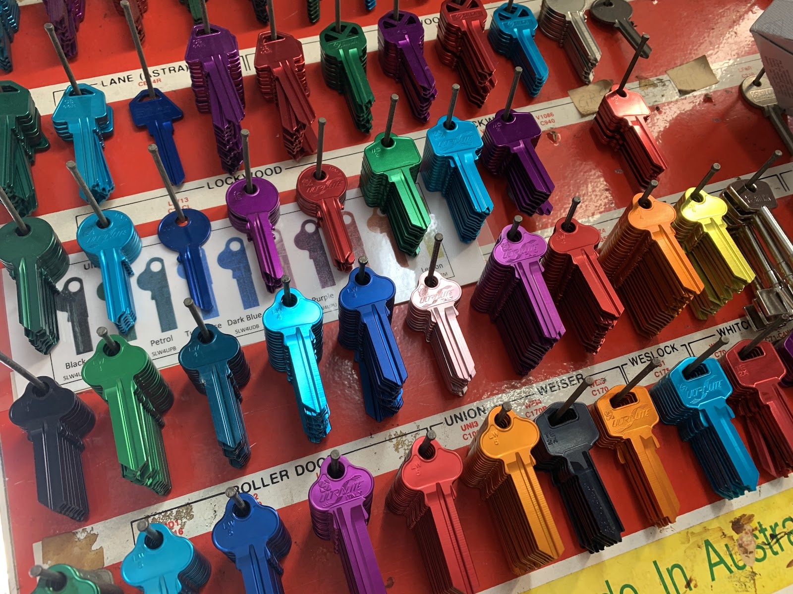
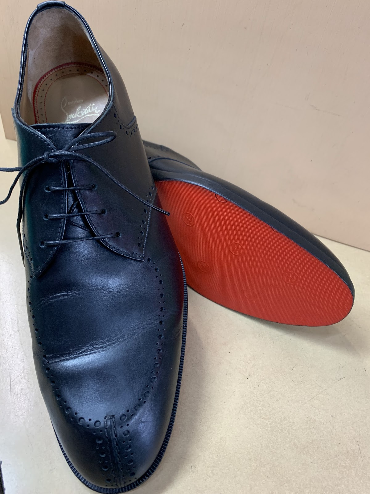
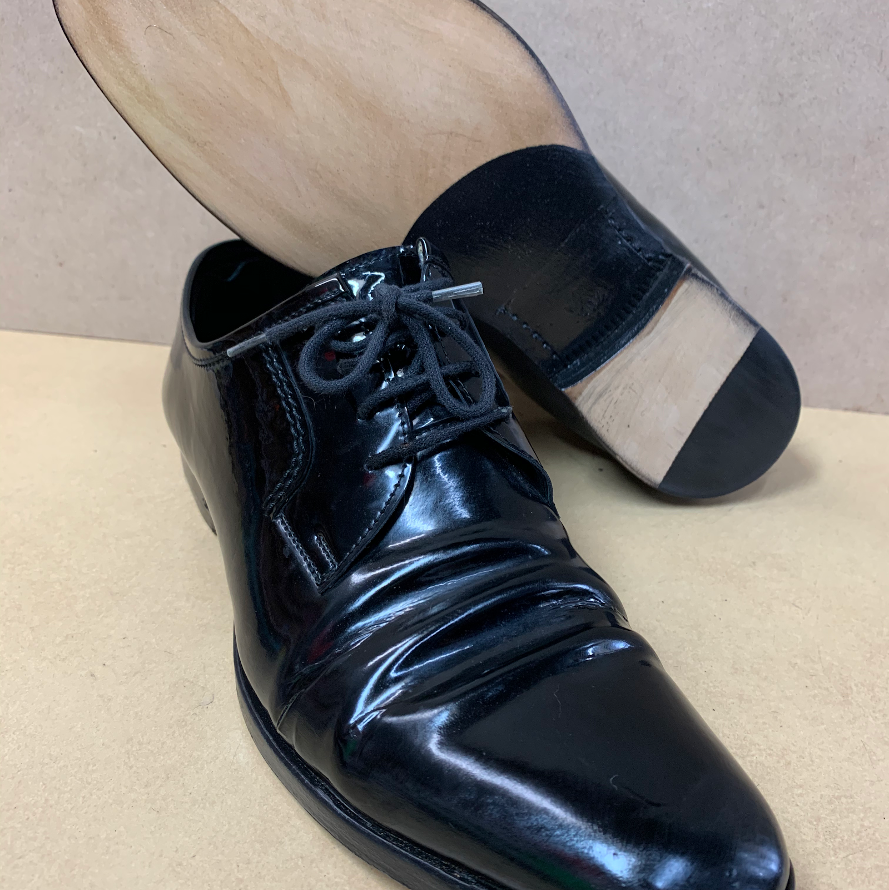
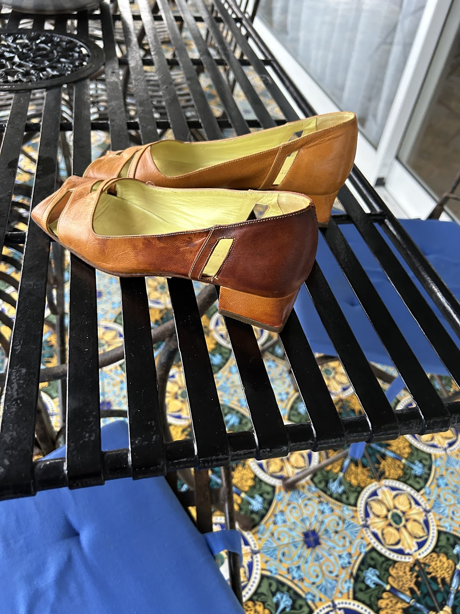
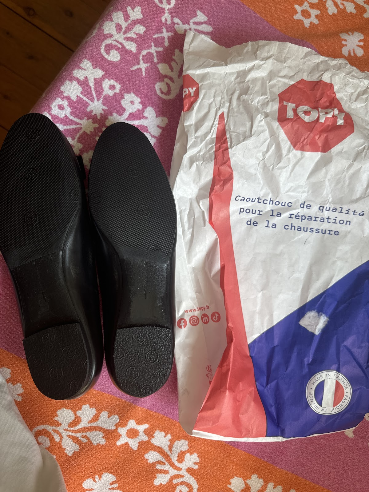
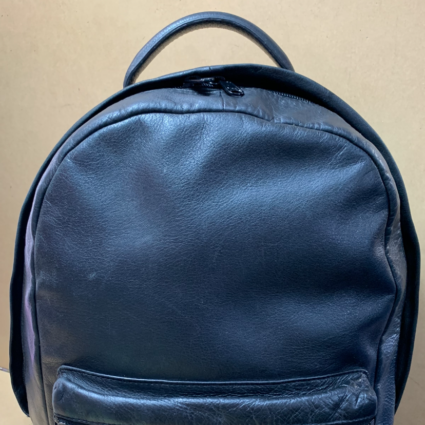

Shoe & boot repair
Resoling, restitching and general repairs for everyday shoes, boots and work boots.
The local shoe-repair and key-cutting shop on Military Road. Shoe & boot repairs, leather work, keys cut while you wait, and car remote batteries — drop in.
A proper trade shop: most repairs done in-house, many keys cut while you wait. Bring it in and we'll tell you straight whether it's worth fixing.
Resoling, restitching and general repairs for everyday shoes, boots and work boots.
New heels, half-soles and full soles — leather or rubber, men's and women's.
House and padlock keys cut while you wait, from a full wall of blanks.
Car key fob and remote batteries replaced on the spot.
Handbags, straps, zips and small leather goods cleaned up and repaired.
Polish, creams, laces and care kits to keep good shoes going longer.
A few jobs from the shop — straightforward, honest repairs.






On Military Road, a short walk from the Neutral Bay shops. Drop-in repairs and key cutting — no appointment needed.